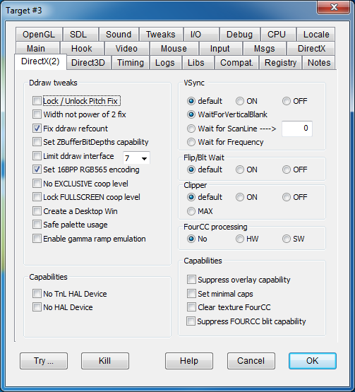

|
Lock/Unlock Pitch Fix |
FIXPITCH |
Some programs ignore the pitch value returned by the DirectDrawSurface::Lock method and fill the graphics buffer according to an incorrect predetermined pitch value. This discrepancy is caused when DxWnd creates virtual surfaces with varying pitch values that may not correspond to the original values when creating the surface on a different memory type (system memory and video memory). When this is happening to a hooked program, some elements may appear diagonally skewed. Note how the left border of the text widget in the figure below goes down and to the right rather than straight down, distorting the contained text as well. This flag resolves the issue by copying the graphic scan lines to the proper memory offset. For additional examples, see Examples > SnowBoard: Racer. |
|
Width not power of 2 fix |
POWER2WIDTH |
Some programs produce texture surfaces of odd sizes, which are generally not supported but can be detected when the textures have an incorrect aspect ratio. This flag resolves the issue by copying the graphic scan lines to the proper memory offset. The most notable example of this issue is in Midtown Madness. |
|
Fix ddraw refcount |
FIXREFCOUNTER |
Decrement the reference counter of some objects to properly track all of DxWnd's service objects. |
|
Set ZBufferBitDepths capability |
SETZBUFFERBITDEPTHS |
The dwZBufferBitDepths is an obsolete field in the DirectDraw surface descriptor. It is no longer set and should be ignored, but some old programs rely on the value of this field and may crash if the field is empty (contains the null value). This flag copies the value returned by the GetCaps method and places it into the dwZBufferBitDepths field. The most notable example of this issue is in Mech Commander 2. |
|
Limit ddraw interface |
LIMITDDRAW |
Instead of using a specific version of DirectDraw, some programs simply request the most recent version available on the machine. Using a version of DirectDraw that is significantly newer than what was available when the game was developed may have poor results. This option hides newer versions of DirectDraw from the hooked program, basically allowing you to manually specify which version of DirectDraw the program should use. Choose a maximum DirectDraw version from the drop-down menu located near this option. |
|
Set 16BPP RGB565 encoding |
USERGB565 |
By default, DxWnd emulates 16BPP color with RGB555 encoding. The option forces RGB565. This option only impacts the video in emulation mode and with 16BPP color depth. |
|
No EXCLUSIVE coop level |
NODDEXCLUSIVEMODE |
When running a program in windowed mode, DxWnd suppresses the DirectDraw DDSCL_EXCLUSIVE mode in the SetCooperativeLevel wrapper, since this mode is not allowed in windowed mode. However, if windowed mode is not requested, DxWnd leaves the cooperative level flags as they are, allowing DDSCL_EXCLUSIVE cooperative mode if requested. This flag also suppresses the DDSCL_EXCLUSIVE mode in fullscreen mode (that is, when DDSCL_FULLSCREEN is set). This flag is required when running "Warhammer 40,000: Rites of War" in non-windowed fullscreen mode. |
|
Lock FULLSCREEM coop level |
LOCKFULLSCREENCOOP |
Prevents return to normal coop level in non windowed mode, used in "Speedboat Attack" fullscreen. |
|
Create a Desktop Win |
CREATEDESKTOP |
This flag creates a window if a game doesn't bother building a gaming window and blits directly on top of the desktop. Fixes "Man TT Super Bike" |
|
Safe palette usage |
SAFEPALETTEUSAGE |
Option to fix DirectDrawPalette use and abuse. As the name suggests, "Safe palette usage" inhibits some part of the palette handling that may cause problems in some circumstances. (fixes "Speedboat Attack"). |
|
Enable gamma ramp emulation |
LOADGAMMARAMP |
To enable gamma ramp correction in ddraw. See Gamma control. |
This panel contains a set of different options meant to fine tune the vertical sync feature. In here, by vsync we mean the wait operation performed by the WaitForVerticalBlank() ddraw method. It should be noted that the vsync is always referred to operations toward the real primary surface on video memory, so in direct modes it changes the Flip / Blt to primary surface operations, while in emulated modes it applies only to blit operations from the virtual primary surface to the real primary surface. The panel contains two selectors, one to specify whether to perform th vsync operation or not, the other to determine the algorythm to be used. It should be noted that the former flag "Optimize CPU" is equivalent to the combination of vsync "ON" + "WaitForFrequency".
|
Default |
Set by default. DxWnd closely follows the programs indications about vsync. |
|
|
ON |
FORCEVSYNC |
When not present, DxWnd insert a WaitForVerticalBlank operation before each Blt/Flip to primary surface. |
|
OFF |
FORCENOVSYNC |
Any WaitForVericalBlank() invocation is bypassed. |
|
WaitForVerticalBlank |
Set by default. When performed, the vsync operation invokes the ddraw native WaitForVerticalBlank method. |
|
|
WaitForScanline |
VSYNCSCANLINE |
This flag is for experimental usage, mainly to try to cause bad wait conditions on the vertical blank condition. The ddraw WaitForVerticalBlank method anly allows for two operation modes, DDWAITVB_BLOCKBEGIN and DDWAITVB_BLOCKEND. Setting this flag the operation is replaced by a series of Sleep(1) waits until the vertical line reaches a given threshold set in the numeric field to the right. The number in there, ranging from 1 to some value above 100, indicates the percentage of vertical line that triggers the end of wait condition. |
|
WaitForFrequency |
SAVELOAD |
On some specific HW and conditions, the WaitForVerticalBlank method could be either unimplemented or implemented in such a way that causes heavy CPU consumption. The WaitForFrequency flag replaces the WaitForVerticalBlank() implementation with an equivalent Sleep(n) operation, where n is calculated to match the exact video vertical frequency. This way, CPU consumption is lowered to the minimum, though the operation is performed regardless the actual vertical line position. On modern computers and video HW, though, this aspect is usually irrelevant and the risk of getting video tearing is absent. |
This panel contains a set of different options meant to fine tune the wait options for Blt or Flip operations. It should be noted that, when using emulated modes, a Flip operation may easily be mapped to one sequence of one or more Blt and Flip operations, so that the original wait indication may have to be remapped to the corresponding indication for another method. It should be noted that the wait is always referred to operations toward the real primary surface on video memory, so in direct modes it changes the Flip / Blt to primary surface operations, while in emulated modes it applies only to blit operations from the virtual primary surface to the real primary surface.
The following are the wait flags affected by the "Blt/Flip Wait" panel:
Blt: DDBLT_WAIT, DDBLT_DONOTWAIT
Flip: DDFLIP_WAIT, DDFLIP_DONOTWAIT
Note: in ddraw, you can specify none of the flags above, but in that case the behaviour is mapped to either a WAIT or a DONOTWAIT condition depending on the ddraw interface version.
|
default |
The Blt / Flip wait related flags are left unchanged. |
|
|
ON |
FORCEWAIT |
Blt / Flip operations are forced to be performed with DDBLT_WAIT / DDFLIP_WAIT flags respetively. |
|
OFF |
FORCENOWAIT |
Blt / Flip operations are forced to be performed with DDBLT_DONOTWAIT / DDFLIP_DONOTWAIT flags respetively. |
This panel contains a set of different options meant to fine tune the clipper creation options for ddraw operations. It should be noted that the lack of a clipper is a frequent cause of the AERO support so when, despite the emulation flags beign properly set, the program breaks AERO at startup, a clipper creation should be attempted.
msdn quote: One common use for a clipper is to define the boundaries of the screen or window. With a clipper that has the screen rectangle as its clip list, DirectDraw knows how to trim the sprite as it performs the blit so that only the visible portion is copied. Without a clipper object, DirectDraw does not allow you to blit the entire sprite, because part of it would fall outside the destination surface. A straight copy of the pixel values in the sprite to the destination surface buffer would result in an incorrect display and even memory access violations.
|
Default |
The clipper object is created or not according to program specifications. |
|
|
ON |
FORCECLIPPER |
Whenever the program omits creating a clipper object (in fullscreen program this is not mandatory!) DxWnd forces its creation. (For example this fixes the MechWarrior 3 targeting crash when resolution is set higher than 800x600.) |
|
OFF |
SUPPRESSCLIPPING |
In some rare cases the clipper creation may lead to screen blinks, slow operations or errors. In these cases it is better to sacrifice AERO support and turn clipping off to let the program run. |
|
MAX |
MAXCLIPPER |
forces the ddraw clip region to be the whole virtual desktop. This is necessary when the program uses the clipper area size to perform further calculations: in case of virtualized desktop, the actual clipper area does not match the scaled values since the primary surface is as big as the whole actual desktop. Used (so far) only by "Full Pipe". |
|
No |
|
|
|
HW |
HWFOURCC |
Hardware processing. |
|
SW |
SWFOURCC |
Software processing. |
|
Suppress overlay capability |
SUPPRESSOVERLAY |
Prevents the game from detecting any hardware overlay capability. Hardware overlay is very efficient, but not very flexible. If you run a program with hardware overlay in a window, you may be able to reposition and resize the window, but the blitted surface (the content of the window) doesn't move or change. This flag makes programs ignore hardware overlay capability so that you can move or stretch the window with expected results. The most notable example of this issue is in Moto Racer 2. |
|
Set minimal caps |
MINIMALCAPS |
Simulates minimal hardware capabilities similar to what's available by the VirtualPC or VMWare emulators. Some older games may not support advanced features, in which case this flag can improve the rendering process and eliminate some artifacts. |
|
No HAL Device |
NOHALDEVICE |
Some old games have a bad support for D3D hardware acceleration. This flag forces the exposed capabilities to map those present when a 3D hardware is absent, mimic for instance of a condition of remote desktop connection. The flag fixed the missing 3D car models in Grand Prix World. when run on specific video hardware. |
|
Clear texture FourCC |
CLEARTEXTUREFOURCC |
DxWnd lets you dump, edit, and replace all uncompressed game textures. Textures compressed with a FourCC codec can't be processed this way. This flag forces FourCC capabilities OFF in the capability query and in texture surface creation. This forces the game to use plain, uncompressed bitmap textures that can be easily tweaked. To avoid texture errors, you may need to adjust texture flags. This flag was introduced to allow uncompressed textures for the game "The Sting!". It now also trims the list to eliminate the DDPF_FOURCC entires. This fixes rendering and text issues in Star Wars: Rogue Squardon 3D. |
|
Suppress FOURCC blit capability |
SUPPRESSFOURCCBLT |
When the application queries the device capabilities, this flag pretends the device has no capabilities to perform flip or blit operations when the surfaces have fourcc encoded data. This is useful because fourcc codec usually work in fullscreen mode, but fail in windowed mode |